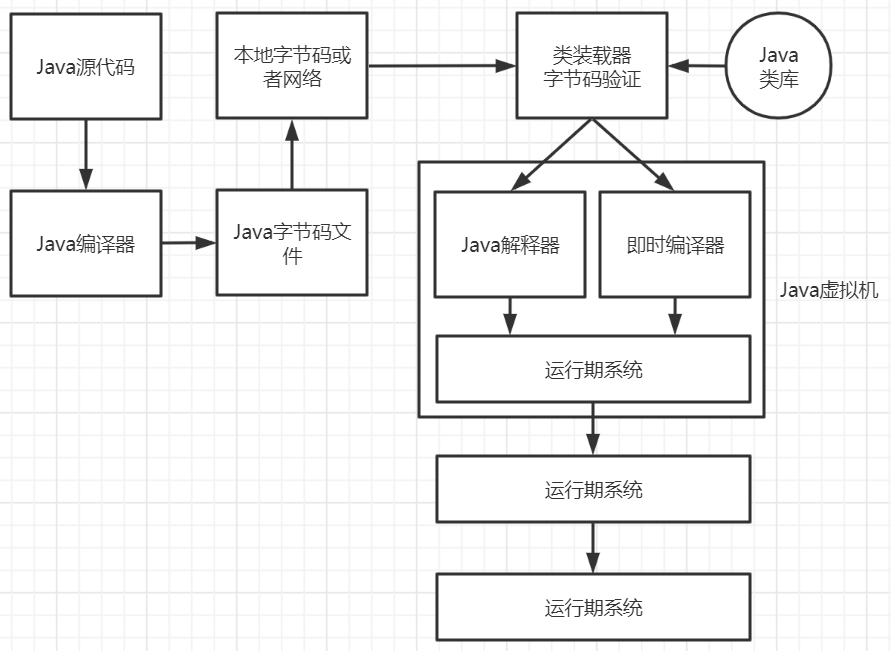
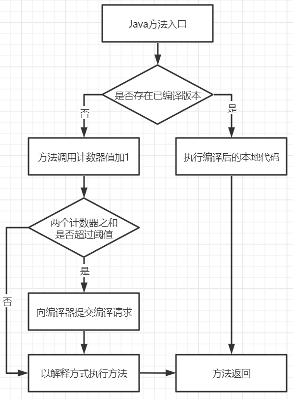

JVM程序运行流程

为什么需要JIT即时编译器
在部分商用虚拟机中，Java程序最初是通过解释器进行解释执行的，解释器会逐条将字节码翻译成机器码。如果某个方法需要被频繁调用、或者某个循环体中的代码需要被循环多次，那么将这些代码编译成与本地平台相关的机器码，每次调用时直接使用机器码，将会大大的提升整体的运行效率。将代码编译成与本地平台相关的机器码的过程就是JIT即时编译。
热点代码
程序中的代码只有是热点代码时，才会被JIT编译成本地代码。
热点代码有两类：
- 被多次调用的方法
- 被多次执行的循环体
两类热点代码在编译时都是以整个方法作为编译对象的。
热点探测技术
要判断一个方法或者一段代码是否是热点代码，需要进行热点探测。
基于采样的热点探测
虚拟机会周期性地检查各个线程的栈顶，如果发现某些方法经常出现在栈顶，那这个方法就是热点方法。这种探测方法的好处是实现简单高效，且可以很容易地获取方法调用关系，缺点是很难精确地确认一个方法的热度，容易受到线程阻塞或别的外界因数的影响而扰乱热点探测。
基于计数器的热点探测
虚拟机会为每个方法建立计数器，统计方法的执行次数，如果执行次数超过一定的阀值，就认为它是热点方法。这种统计方法实现复杂一些，需要为每个方法建立并维护计数器，而且不能直接获取到方法的调用关系，但是好处是它的统计结果相对更加精确严谨。
HotSpot热点探测技术
HotSpot虚拟机使用的是基于计数器的热点探测方法，它为每个方法准备了两个计数器，方法调用计数器和回边计数器。在确定虚拟机运行参数的前提下，这两个计数器都有一个确定的阈值，当计数器超过阈值溢出时，就会触发JIT编译。
方法调用计数器
方法调用计数器用于统计方法被调用的次数。在Client运行模式下阀值是1500次，在Server运行模式下是10000次。可以通过虚拟机参数-XX:CompileThreshold进行设置
JVM存在热度衰减，一段时间内调用方法的次数较少，计数器就会减小。

回边计数器
回边计数器用于统计一个方法中循环体代码执行的次数，在字节码中遇到控制流向后跳转的指令称为回边。
为什么要使用解释器与编译器并存的架构
- 首先，编译器编译之后的本地代码需要占用一定的内存空间，但使用本地代码比解释执行效率更高。
- 当程序需要迅速启动和执行的时候，解释器可以首先发挥作用，省去编译的时间。在程序运行后，随着时间的推移，编译器逐渐发挥作用，把越来越多的代码编译成本地代码之后，可以获取更高的执行效率。
- 当程序运行环境的内存资源限制比较大时，可以使用解释器执行以节约内存。如果内存资源充足，可以使用编译执行来提升效率。所以解释器和编译器是互补的。
- 对于只执行一次或很少执行的代码，JIT编译带来的执行速度的提升不一定能抵消最初编译带来的开销。只有对频繁执行的代码，JIT编译才能保证有正面的收益。
为什么要实现两个不同的即时编译器
-
HotSpot虚拟机中内置了两个即时编译器：Client Complier和Server Complier，简称C1、C2编译器，分别用在客户端和服务端。
-
在HotSpot中解释器会与其中一个编译器配合工作，程序使用哪个编译器，取决于虚拟机运行的模式。HotSpot虚拟机会根据自身版本与宿主机的硬件性能自动选择运行模式，用户也可以使用-client或-server参数强制指定虚拟机运行的模式。
-
Client Complier可以获得更高的编译速度，Server Complier可以获得更好的编译质量。
-
Client Complier是一个简单快速的编译器，主要关注点在于局部优化，而放弃许多耗时较长的全局优化手段。Server Complier则是专门面向服务器端，并为服务端的性能配置特别调整过的编译器，是一个充分优化过的高级编译器。
JIT优化
1. 公共子表达式的消除
如果一个表达式E已经计算过了，并且从先前的计算到现在E中所有变量的值都没有发生变化，那么E的这次出现就成为了公共子表达式。对于这种表达式，没有必要花时间再对它进行计算，只需要直接用前面计算过的表达式结果代替E就可以了。
如果这种优化仅限于程序的基本块内，便称为局部公共子表达式消除。如果这种优化范围涵盖了多个基本块，就称为全局公共子表达式消除。
举例：
1 | int d = (c * b) * 12 + a + (a + b * c); |
当这段代码进入到虚拟机即时编译器后，编译器检测到cb与bc是一样的表达式，而且在计算期间b与c的值是不变的。因此，这条表达式可以被优化为：
1 | int d = E * 12 + a + (a + E); |
编译器还可能进行代数化简优化：
1 | int d = E * 13 + a * 2; |
2. 方法内联
将方法调用直接使用方法体中的代码进行替换，减少方法调用过程中压栈与入栈的开销。如果JVM监测到一些小方法被频繁的执行，它会把方法的调用替换成方法体本身。
举例：
1 | private int addFour(int x1, int x2, int x3, int x4) { |
优化之后：
1 | private int addFour(int x1, int x2, int x3, int x4) { |
3. 逃逸分析
逃逸分析是一种可以有效减少Java程序同步负载和内存堆分配压力的跨函数全局数据流分析算法。通过逃逸分析，Java HotSpot编译器能够分析出一个新的对象的引用的使用范围从而决定是否要将这个对象分配到堆上。
逃逸分析的基本行为就是分析对象动态作用域。
逃逸分析类型
- 全局变量赋值逃逸
- 方法返回值逃逸
- 实例引用发生逃逸
- 线程逃逸：赋值给类变量或可以在其他线程中访问的实例变量
1 | public class EscapeAnalysis { |
方法逃逸与线程逃逸：
1 | public static StringBuffer createStringBuffer(String s1, String s2) { |
StringBuffer是一个方法内部变量，如果将sb直接返回，此时这个StringBuffer有可能被其他方法所改变，这样它的作用域就不只是在方法内部，虽然它是一个局部变量，它逃逸到了方法外部。如果StringBuffer被外部线程访问到，则称为线程逃逸。
使用逃逸分析后编译器的优化
- 同步省略，如果一个对象被发现只能从一个线程被访问到，那么对于这个对象的操作可以不考虑同步。
- 将堆分配转化为栈分配，如果一个对象在子程序中被分配，要使指向该对象的指针永远不会逃逸，对象可能是在栈中被分配。
- 分离对象或标量替换，有的对象可能不需要作为一个连续的内存结构存在也可以被访问到，那么对象的部分或全部可以不存储在内存中，而是存储在CPU寄存器中。
如何开启或关闭逃逸分析
通过JVM参数来指定是否开启逃逸分析：
1 | -XX:+DoEscapeAnalysis 开启逃逸分析 |
从JDK 7开始默认开启逃逸分析，可以使用-XX:-DoEscapeAnalysis参数关闭。
4. 逃逸分析之对象的栈上内存分配
一般情况下，对象和数组元素的内存分配是在堆内存上进行的。但随着JIT编译器的日渐成熟，很多优化使这种分配策略并不绝对。JIT编译器可以在编译期间根据逃逸分析的结果，来决定是否可以将对象的内存分配从堆转化为栈。
1 | public class EscapeAnalysisTest { |
在alloc方法中定义创建User对象，该对象没有在方法外部被引用。也就是说，这个对象并不会逃逸到alloc方法的外部。经过JIT的逃逸分析后，可以对其内存分配进行优化。
5. 逃逸分析之标量替换
标量是指一个无法再分解成更小数据的数据。
在JIT阶段，如果经过逃逸分析，发现一个对象不会被外界访问，经过JIT优化，就会把这个对象拆解成若干个成员变量来代替。
1 | public class A { |
1 | private void getA() { |
优化后：
1 | private void getA() { |
6. 逃逸分析之同步锁消除
经过逃逸分析，当加锁的变量不会发生逃逸，那么该变量便是线程私有的，也就完全没有必要加锁了。在JIT编译时期就可以将同步锁去掉，以减少加锁与解锁造成的资源开销。
1 | public class LockEliminate { |
getString()方法中的StringBuffer是一个局部变量，且不会逃逸出方法，因此它就不可能被多个线程同时访问，也就不会有资源的竞争，但是StringBuffer的append()是一个同步操作，经过JIT编译器的优化，可以消除该锁。